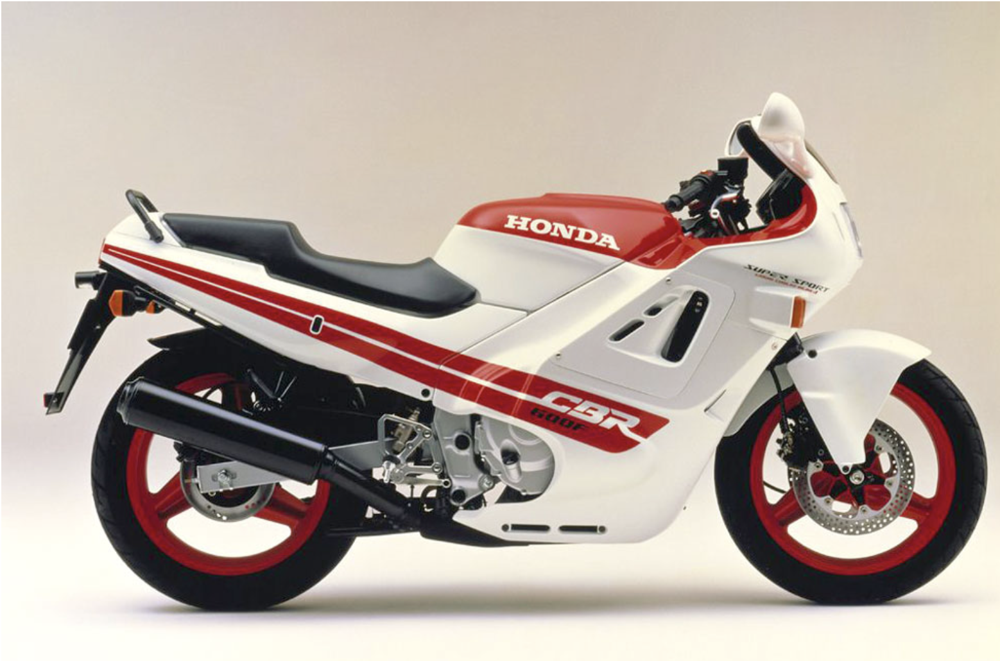
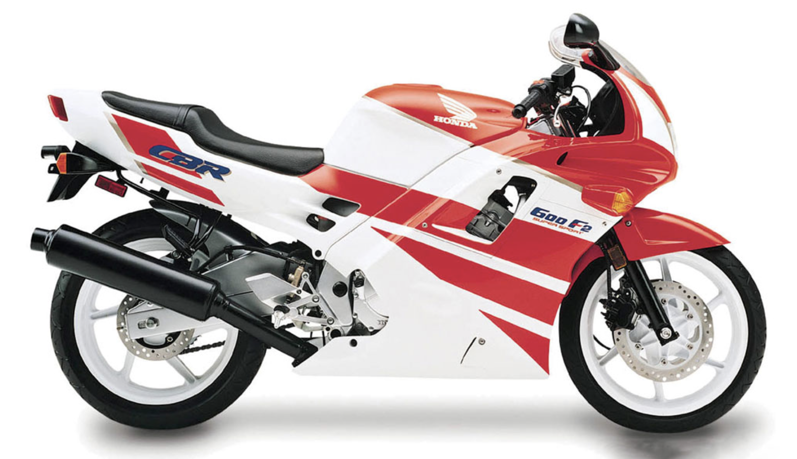
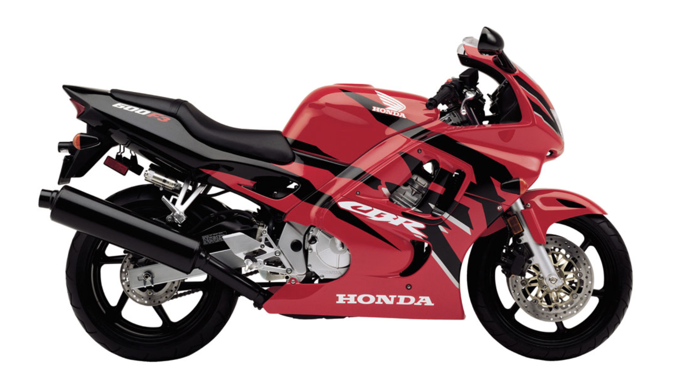
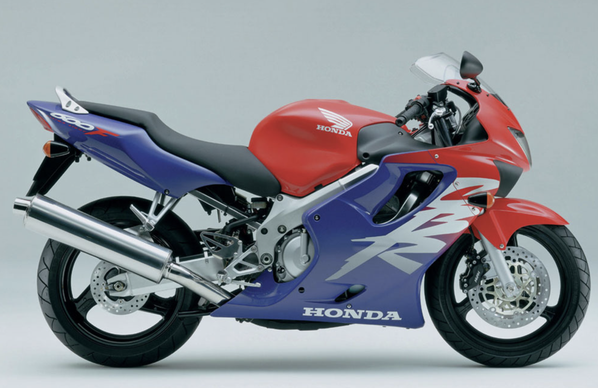
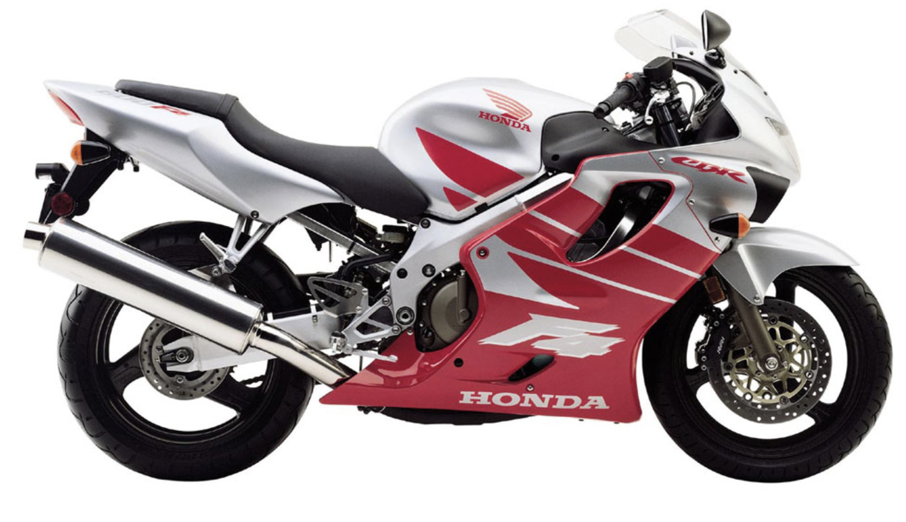
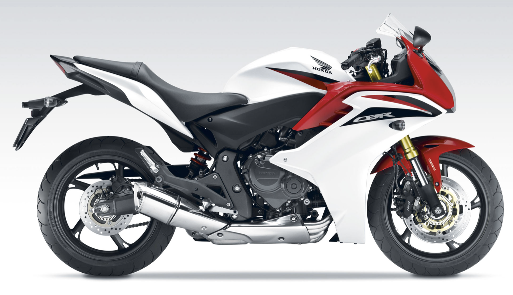
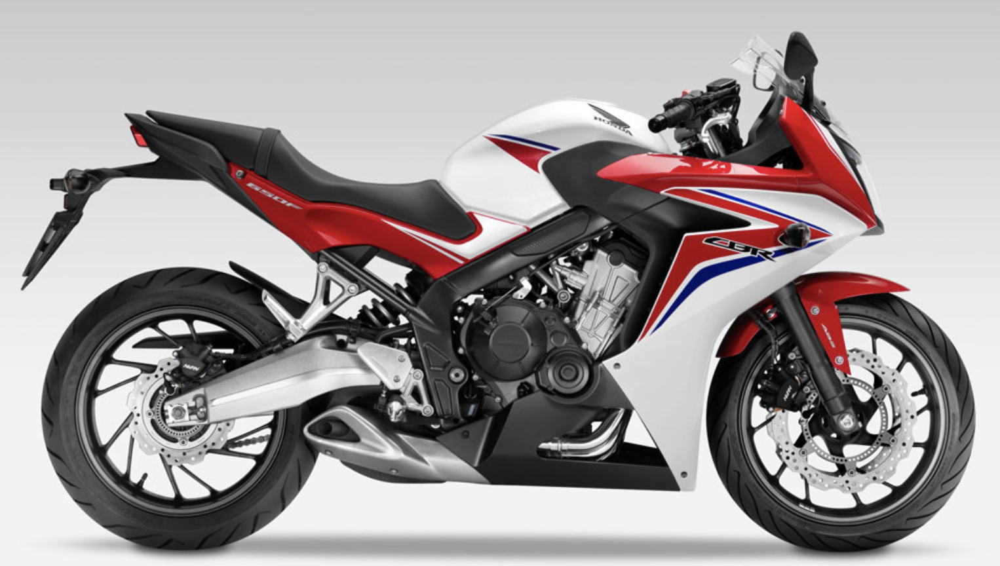
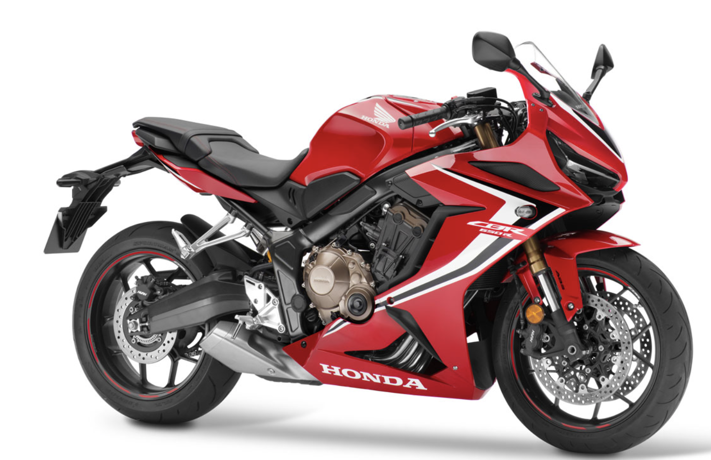

CBR 600F 1987
La Honda CBR 600 F de 1997 fue la conocida como Hurricane, en en mercado norteamericano. El modelo permaneció prácticamente inalterado hasta 1990. Fue presentada en el Circuito de Suzuka, en Japón, el 14 de diciembre de 1986. El motor de 599 cc, cuatro cilindros en línea refrigerado por agua marcó unas cotas de calidad y posibilidades que más tarde se empleó en otras gamas de Honda orientadas al sport turismo. En 1987 sólo entregaba 85 cv (diez más que su rival Kawasaki GPZ 600), ya tenía cuatro válvulas por cilindro y caja de cambios de seis relaciones. El bastidor era de tipo doble viga y añadía un extra de rigidez al conjunto. Otra de sus novedades fue la llanta delantera de 17’’.
CBR 600F2 1991
La Honda CBR 600 F2 fue la CBR más popular, quizás la más vendida de la saga. Permaneció con pocas variaciones hasta 1999 y quizás, y aunque esto sea muy subjetivo, fue la más bonita de todas. Mantuvo la línea completamente carenada de la versión precedente, y los mayores avances los encontramos en su motor que ahora rinde 95 cv. Honda ya se encontró con una fuerte competencia de sus compatriotas Yamaha, Kawasaki o Suzuki, pero la firma del “ala dorada” mantuvo el equilibrio de su deportiva que valía para el día a día o para entregarlo todo en un circuito. El concepto Honda CBR era ya todo un éxito.
CBR 600F3 1995
Desde 1991 la Honda CBR 600 no para de evolucionar, y en 1995 marca un nuevo hito en su historia con la denominada F3. Sigue manteniendo el ritmo de ventas frente a la competencia y la fama de ser la moto deportiva más equilibrada del mercado, pero poco a poco su público demanda chasis de aluminio o la horquilla invertida que ya se veían entre la competencia. Honda estuvo trabajando en esta versión en el motor, ahora con 90 cv. Las mejoras las encontramos en la toma de admisión con Ram Air, en el cárter, mejoras internas en la horquilla, y algunas modificaciones en el subchasis trasero.
CBR 600F4 1999
El gran cambio de la Honda CBR 600 llegó en 1999 con su cuarta versión. Fue la última CBR de carburadores y pronto los tendrá que sustituir por inyección electrónica. La gran novedad llega de su chasis de Aluminio, que ya se muestra entre sus fibras. Por fin abandona el concepto de la Hurricane de un carenado completamente cerrado, unas líneas estéticas que habían durado más de 10 años. A pesar de que la competencia, como la Yamaha R6, apuestan por motos deportivas mucho más radicales, duras de suspensiones y asientos, Honda sigue fiel al concepto CBR con asiento biplaza y mullido; una moto deportiva pero práctica para viajar o para el día a día. Dos enormes entradas de aire comunican el frontal del carenado con la caja del filtro del aire, y el motor sube de potencia hasta los 96 cv.
CBR 600F4i 2001
Honda tiene que introducir a los tres años del lanzamiento de la CBR F4 la inyección electrónica. Así nace la CBR 600 F4i de 2001, que trae de la mano algunas modificaciones en su chasis y cuadro de mandos. La inyección electrónica hace que el motor sea mucho más redondo en toda su gama de utilización, además de reducir el consumo y las emisiones contaminantes. Honda llega a la conclusión que no puede despistarse de la competencia que está haciendo deportivas mucho más radicales y divide la producción de la CBR 600 entre las F y las R. El motor pasa a tener 109 cv. En la parte frontal encontramos un doble faro.
CBR 600F 2011
Las deportivas de Honda siguieron la línea de las RR, mientras que la CBR 600 F siguió permaneciendo en el mercado como deportiva polivalente y cómoda, capaz de llevarte todos los días al trabajo, como para darte unas vueltas en un circuito. Honda dejó la terminación F para ofrecer la versión con carenado de la exitosa Honda Hornet. El mundo de la moto había cambiado, la criminalización de las motos deportivas y la persecución de los infractores de velocidad en carretera hicieron que muchos perdieran el interés por las deportivas. Esta versión estrenaba nuevo chasis de aluminio y compartía motor con la también revisada Honda CB 600 F, que era el mismo que el de la CBR 600 RR de 2007, con 90 cv de potencia. El chasis ahora es el de la Hornet, con espina central en acero; la horquilla es de tipo invertida multirregulable e incluía frenada combinada con ABS.
CBR 650F 2014
En 2014 se lanzó una versión de la Honda CBR, la 650 F. El motor se basa en el anterior, el cuatro cilindros en línea de las CBR, pero se modifica la cilindrada no para que de más caballos de pontencia, si no para reondear toda su gama de utilización. De hecho ahora sólo ofrece 87 cv a pesar de su incremento de cilindrada. El concepto de las F de Honda deriva finalmente a las naked, para las sport turismo pone todo su esfurezo en los V4 de la Honda VFR 800 y para las supersport definitivamente está la CBR 600 RR, mucho más radical y orientada hacia la competición. Hoy queda en entredicho la existencia de los motores de 600 deportivos, porque tanto da hacerlos de 600 como de 1000 cc.
CBR 650F 2014
En 2019, trabajando sobre la misma versión han mejorado todo el conjunto. Este año montan nuevas suspensiones -horquilla invertida Showa de 41mm-, mejores frenos -pinzas de anclaje radial con discos flotantes de 310mm en el tren delantero- y en el motor también ha recibido mejoras y ahora estira hasta las 12.000 rpm con una cifra máxima de potencia de 95cv. Además incorpora el QuickShifter de Honda, que nos permite subir marchas sin coger embrague ni cortar acelerador.